塑性分析與設計
第 1 章全景：降伏 vs 崩塌
彈性設計在最外一根纖維碰到 \(F_y\) 時就喊停。塑性設計問的是另一件事：載重還能再加多少，結構才真的變成一組會動的連桿，也就是崩塌機構。
| 門檻 | 判定 |
|---|---|
| 彈性設計 | 最外纖維到 \(F_y\) 就喊停 |
| 塑性設計 | 結構變成機構才算崩塌 |
這兩個門檻之間，隔著兩段儲備：斷面儲備和結構儲備。這個單元的十道考題，全部落在這兩段裡。
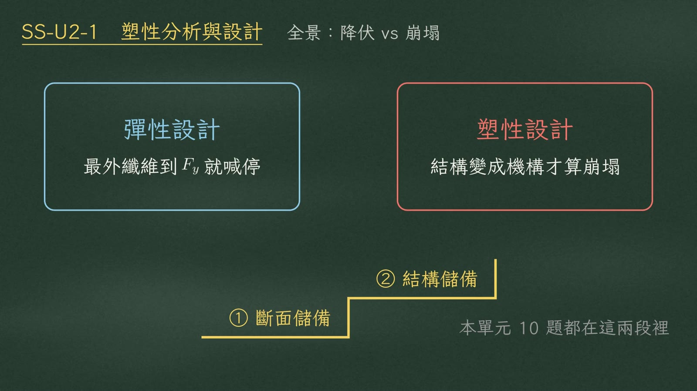
拿 SS-2005-4 這根梁（一端固定、一端簡支、均佈載重）來看：
| 階段 | 事件 | 載重 \(w\)（tf/m） |
|---|---|---|
| ① | 最外纖維降伏 | 2.07 |
| ② | 固定端成為第一個塑性鉸 | 3.71 |
| ③ | 跨間再出第二個鉸，結構崩塌 | 5.40 |
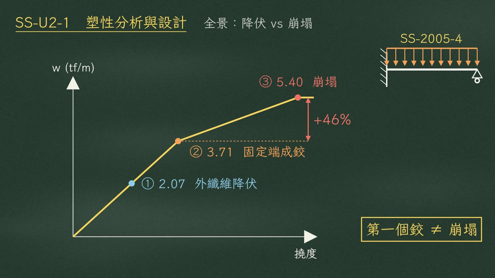
第 2 章中性軸會搬家
斷面層級只要兩個假設：
| 假設 | 內容 |
|---|---|
| ① 平面保持平面 | 應變沿高度永遠是直線：\(\varepsilon = \varphi y\) |
| ② 理想彈塑性 | 應力到 \(F_y\) 就走平台：\(\sigma \le F_y\) |
塑性化就是應變那條線一直變陡，應力被 \(F_y\) 從上下兩端開始截頂，最後只剩兩塊矩形。
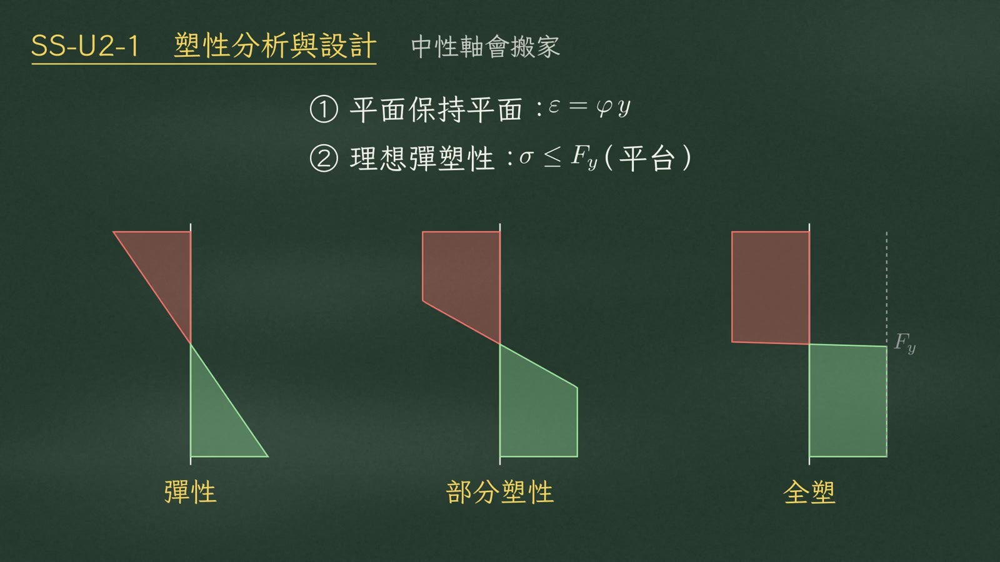
中性軸在哪？純彎曲沒有軸力，壓的合力等於拉的合力：
$$\int \sigma\, dA = 0$$| 狀態 | 應力 | 條件 | 中性軸 |
|---|---|---|---|
| 彈性 | \(\sigma \propto y\) | \(\int y\, dA = 0\)（一次矩為零） | 過形心，叫 ENA |
| 全塑 | \(\sigma = \pm F_y\) | \(A_c = A_t = A/2\)（上下面積相等） | PNA |
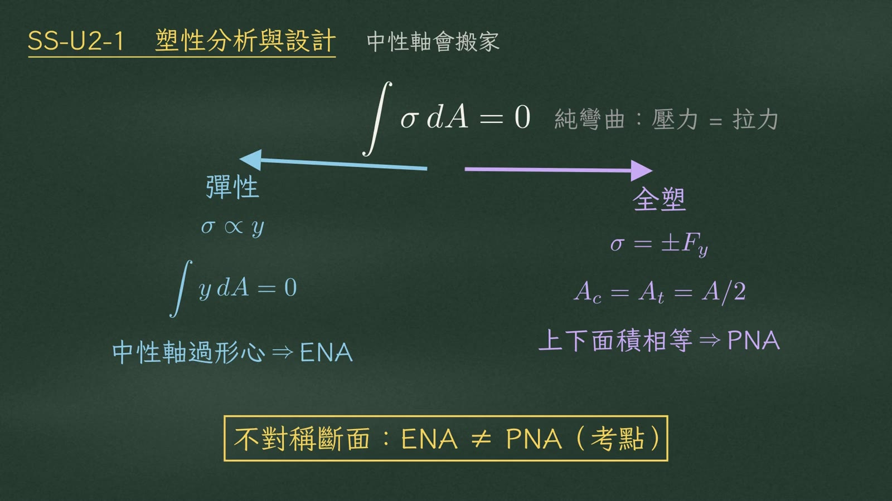
第 3 章範例 SS-2010-1
SS-2010-1：四塊板由下往上堆，6×2、2×2、6×2、頂上再一塊 2×2 凸塊，\(F_y = 4\)。
彈性：誰先降伏
形心距底 3.5 cm，頂緣離它 4.5 cm，比底緣遠，所以頂側先降伏。
$$S_{min} = \frac{162.67}{4.5} = 36.15\ \text{cm}^3,\qquad M_y = 4.0\times 36.15 = 144.6\ \text{tf}\cdot\text{cm}$$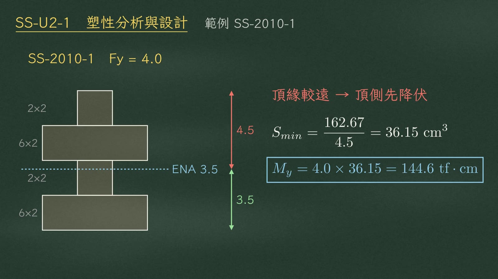
全塑：等面積軸
全塑時，面積一半是 16 cm²，由底往上累加，剛好停在第二、第三塊交界，PNA 距底 4.0 cm。
$$Z = 64\ \text{cm}^3,\qquad M_p = 4.0\times 64 = 256\ \text{tf}\cdot\text{cm},\qquad f = \frac{64}{36.15} = 1.77$$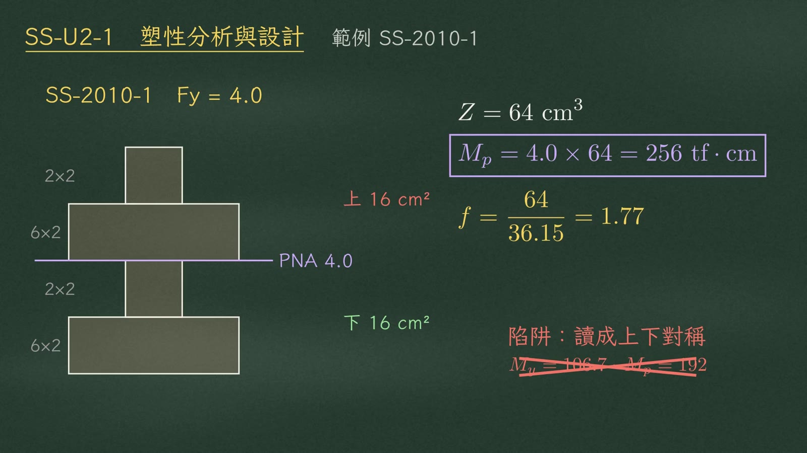
第 4 章Z：一個力偶，兩塊面積
\(Z\) 不是新的幾何量。全塑時上半一個壓力、下半一個拉力，各等於 \(F_y\cdot A/2\)，\(Z\) 就是半面積乘上兩半形心的距離，也就是每塊面積乘它到 PNA 的距離再加總：
$$Z = \frac{A}{2}\left(\bar y_c + \bar y_t\right) = \sum A_i\,|d_i|$$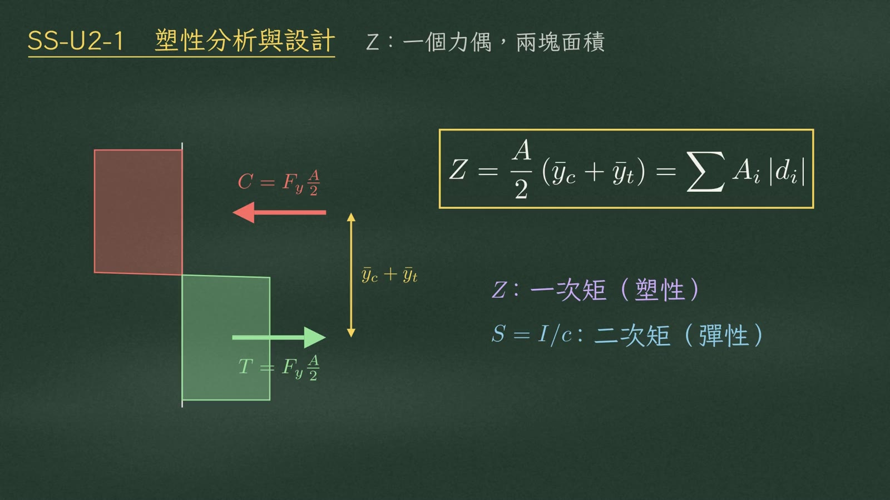
關鍵是先問 PNA 落在哪一塊。SS-2020-2 的上翼板只有 75 cm²，不到半面積 103.75 cm²，PNA 掉進腹板，距頂 21.67 cm。
這樣得：
$$Z = 4{,}624\ \text{cm}^3,\qquad M_p = 2.5\times 4{,}624 = 11{,}560\ \text{tf}\cdot\text{cm}$$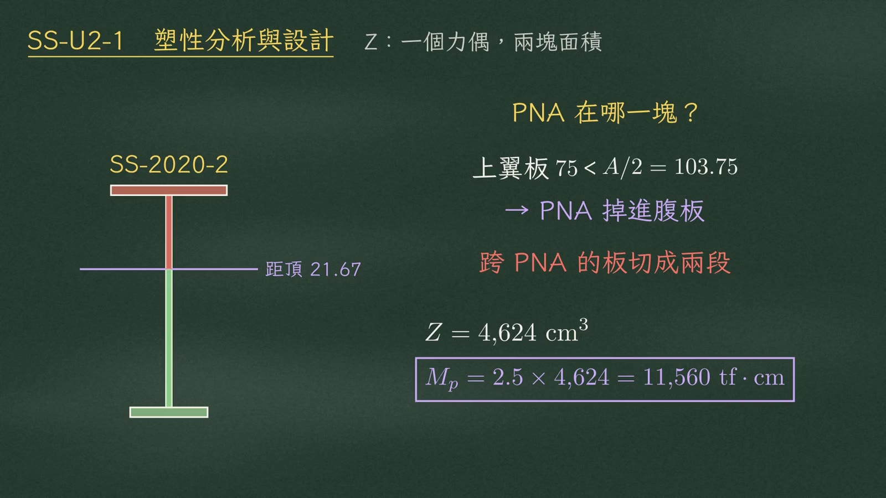
第 5 章誰先降伏？取 Smin
非對稱斷面求 \(M_y\)，要問哪一側離 ENA 比較遠。SS-2023-3 頂翼板寬、底翼板窄，寬翼板把形心拉上去，結果窄的底緣反而離得遠，底緣先降伏，\(S_{min}\) 取在底側：
$$M_y = F_y\,S_{min},\qquad S_{min} = S_{bot}$$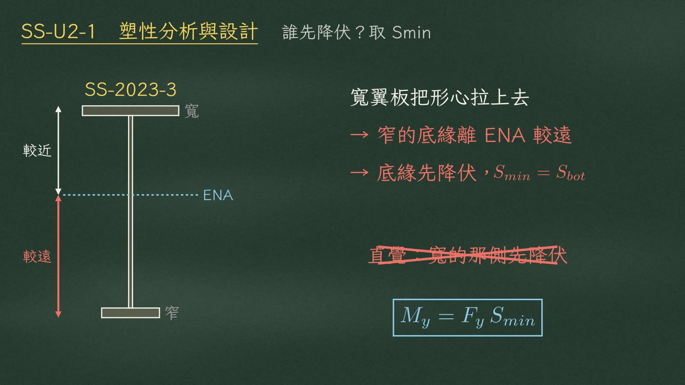
第 6 章圓管與 H 型鋼
空心圓管（SS-2013-1，內徑 \(0.6D\)）
\(Z\) 可以外圓減內圓，因為兩者對同一條軸取一次矩：
$$Z = \frac{D^3 - d^3}{6} = 0.1307\,D^3$$\(S\) 卻不行，\(S\) 的分母是外緣距離，只能先把慣性矩相減，再除以 \(D\) 的一半：
$$S \ne S_{out} - S_{in},\qquad S = \frac{I_{out} - I_{in}}{D/2} = 0.0855\,D^3$$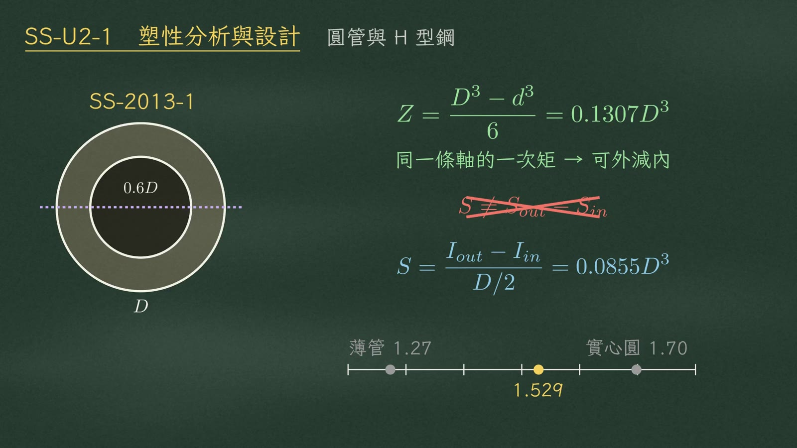
雙對稱 H 型鋼
一條式子：翼板面積乘力臂，加上腹板那一項。
$$Z_x = b_f t_f\,(d - t_f) + \frac{t_w (d - 2t_f)^2}{4}$$SS-2006-3 的 H600×300×12×20：\(Z = 4{,}420.8\ \text{cm}^3\)。
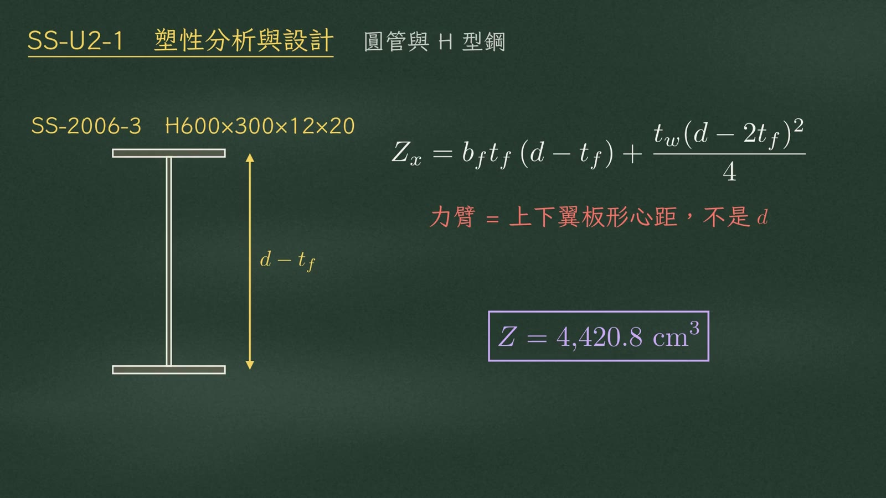
第 7 章形狀因子
形狀因子 \(f = Z/S\)：
| 斷面 | \(f\) |
|---|---|
| H 型鋼 | 約 1.12 |
| 矩形 | 1.50 |
| 圓管（SS-2013-1） | 1.53 |
| 實心圓 | 1.70 |
| T 型（SS-2005-4） | 1.79（最大） |
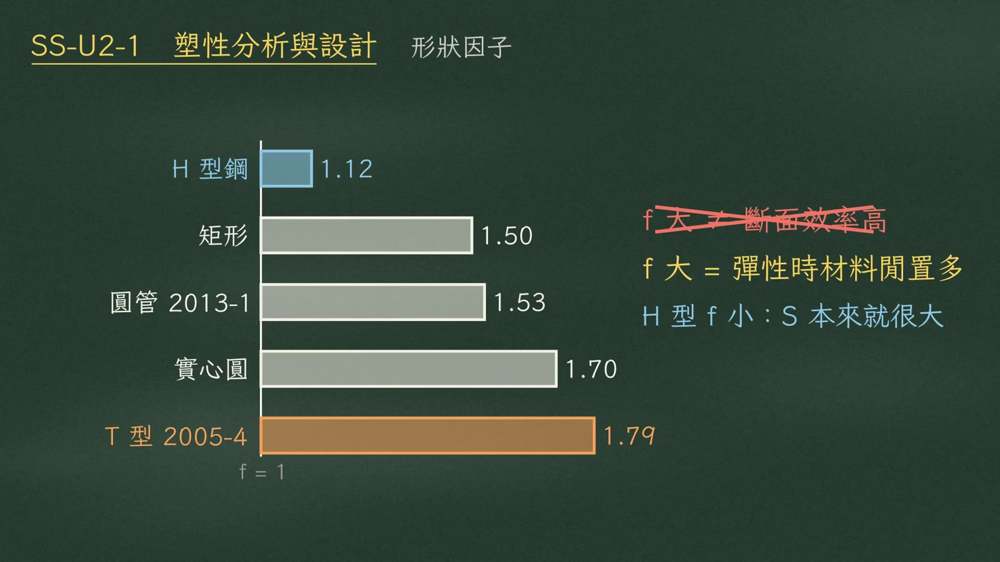
第 8 章塑性鉸：有強度的鉸
斷面要曲率無限大才真正到 \(M_p\)。實際上大曲率只集中在彎矩最大處很短的一段，把它縮成零長度，就是塑性鉸：轉角可以一直增加，但轉的時候一直傳遞 \(M_p\)。
| 彎矩 | 內功 | |
|---|---|---|
| 一般鉸 | \(M = 0\) | 0（不耗能） |
| 塑性鉸 | \(M = \pm M_p\) | 轉一個 \(\theta\) 消耗 \(M_p\theta\) |
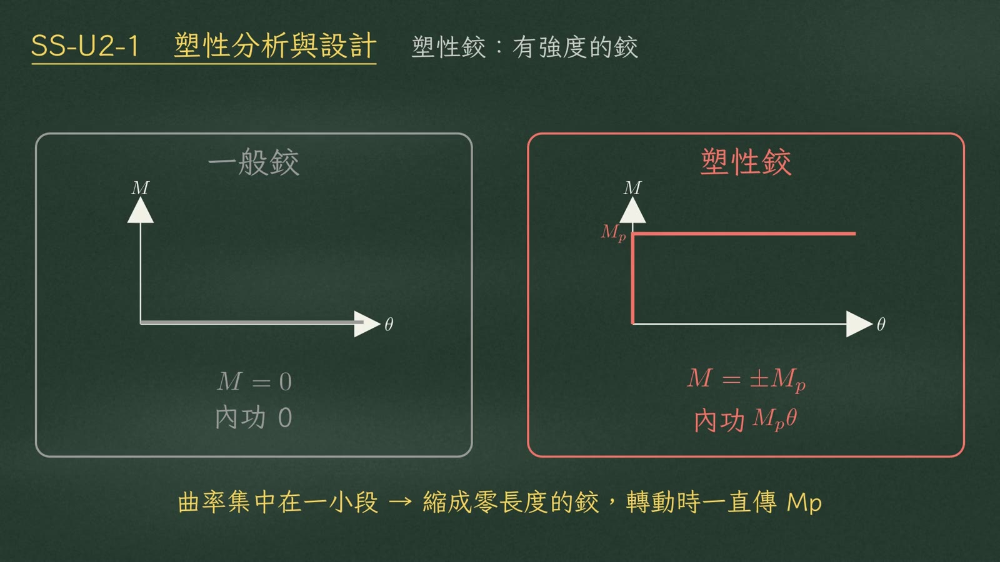
鉸會出在彎矩最先到 \(M_p\) 的地方：固定端和連續支承、集中載重點、均佈載重的最大正彎矩處。
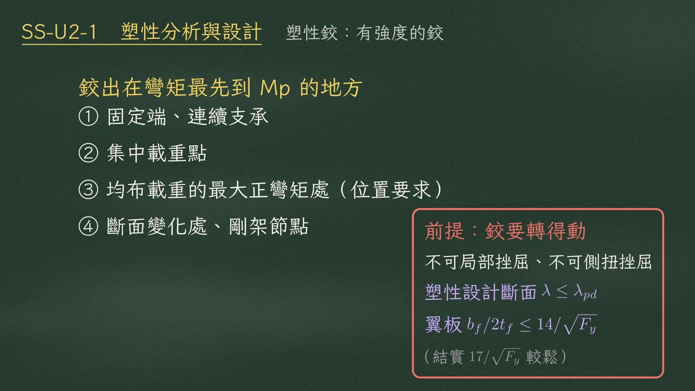
第 9 章機構與虛功：SS-2005-4
靜不定度 \(n\) 的結構，\(n\) 個鉸讓它變成靜定，第 \(n+1\) 個鉸讓它變成機構。
| 結構 | \(n\) | 完整機構鉸數 |
|---|---|---|
| 簡支梁 | 0 | 1 |
| 一端固定一端簡支 | 1 | 2 |
| 兩端固定 | 2 | 3 |
機構能動一下，就能用虛功：外力做的功，等於所有塑性鉸消耗的功。
$$W_{ext} = W_{int}$$| 項目 | 算法 |
|---|---|
| 外功 | 載重 \(w\) × 位移圖面積 |
| 內功 | \(\sum M_p\) × 每個鉸的相對轉角（簡支端不算） |
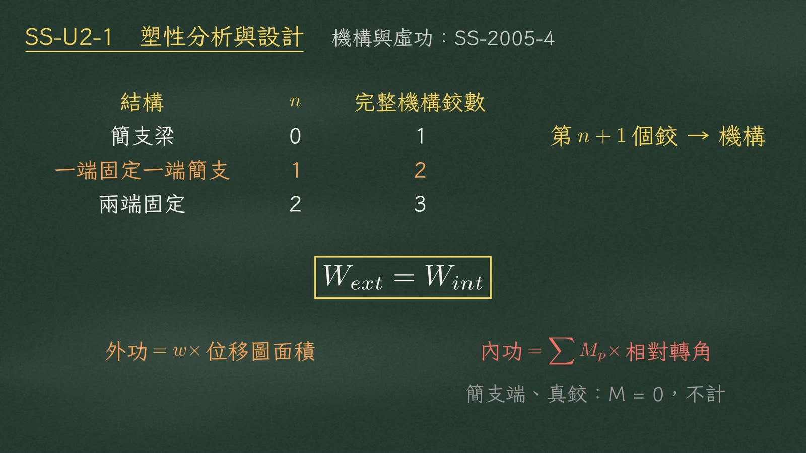
SS-2005-4，固定端 A 轉 \(\theta\)，跨間鉸 C 距 A 為 \(x\)。C 的相對轉角是左右兩段轉角之和，別漏了右邊：
$$\theta_C = \theta + \theta\,\frac{x}{L-x}$$寫出 \(w\) 隨 \(x\) 變化，取最小值：
$$w(x) = \frac{2M_p\,(2L - x)}{L\,x\,(L-x)},\qquad x = (2-\sqrt2)\,L = 0.586L\ \text{（距固定端）}$$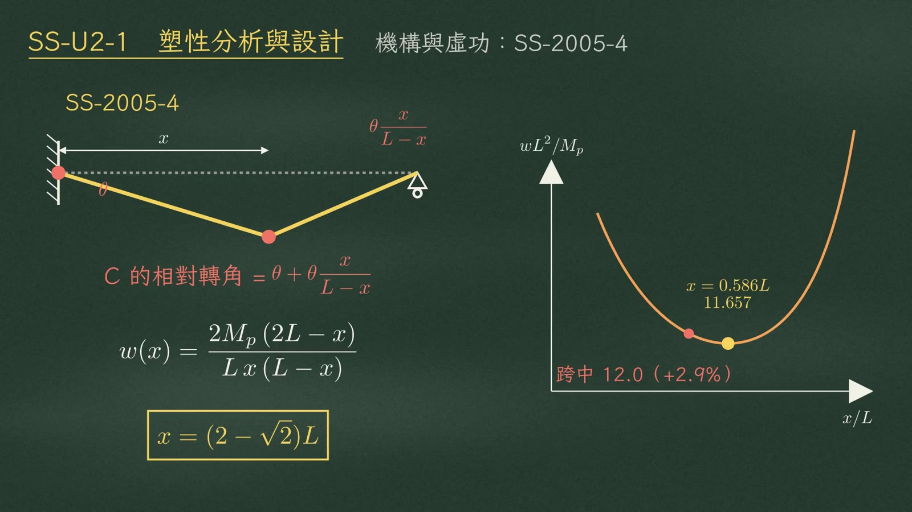
代入 T 型梁的 \(M_p = 1{,}668.6\ \text{tf}\cdot\text{cm}\)，崩塌係數 \(6+4\sqrt2 = 11.657\)：
$$w_u = (6+4\sqrt2)\frac{M_p}{L^2} = 11.657\times\frac{1{,}668.6}{600^2} = 5.40\ \text{tf/m}$$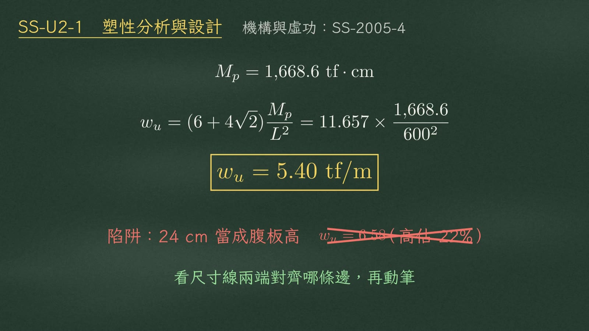
第 10 章同一點，兩種量法
SS-2020-2 把 \(x\) 從滾支端量起，得到 \((\sqrt2-1)L = 0.414L\)。它和 \(0.586L\) 是同一個點，常數也一樣是 11.657：
$$w_u = 11.657\times\frac{11{,}560}{800^2} = 21.06\ \text{tf/m}$$固定端有 \(M_p\) 幫忙扛，鉸被推向簡支端。集中載重更簡單，鉸位已知，跨中集中力得：
$$P_u = \frac{6M_p}{L}$$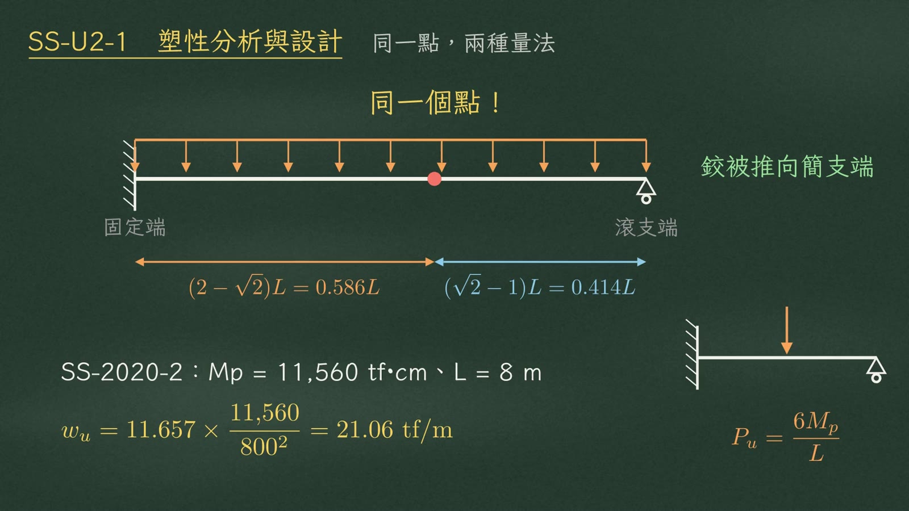
第 11 章上下限與重分配
| 方法 | 性質 | 說明 |
|---|---|---|
| 機構法 | 上限 \(w_{mech} \ge w_u\) | 猜錯機構，算出來一定偏高 |
| 平衡法 | 下限 \(w_{eq} \le w_u\) | 任何平衡、而且處處 \(|M| \le M_p\) 的彎矩圖，對應的載重一定不超過真值 |
兩邊夾到同一個數，才是精確解。
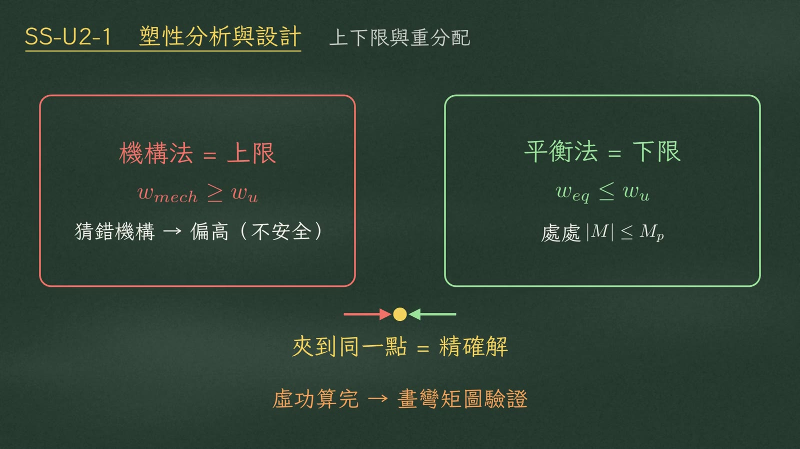
第一個鉸出現時，固定端已到 \(-M_p\)，跨間只用了 0.56 倍，還閒著。之後固定端被鎖住，多的載重全轉給跨間，這就是彎矩重分配。
| 狀態 | 載重 | 固定端 | 跨間 |
|---|---|---|---|
| 第一個鉸 | \(w_1 = 8M_p/L^2\) | \(-M_p\) | \(0.56M_p\) |
| 崩塌 | \(w_u = 11.657M_p/L^2\) | \(-M_p\) | \(+M_p\) |
從降伏到崩塌是 2.61 倍：
$$2.61 = \underbrace{1.79}_{\text{斷面儲備}}\times\underbrace{1.46}_{\text{結構儲備}}$$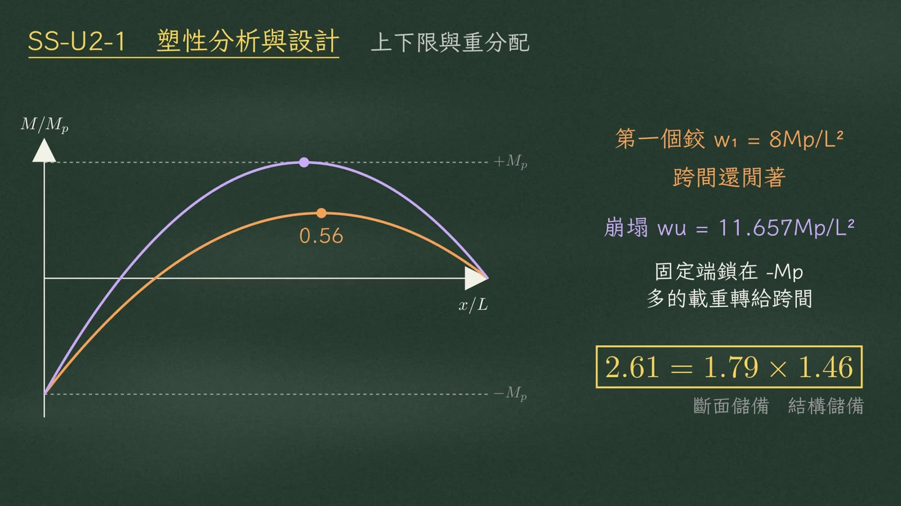
第 12 章規範前提
考題寫「以塑性設計法」，就用 \(M_p = F_y Z\) 和機構法作答。但現行 AISC 360 的 F9 對 T 型梁有上限：
| T 型梁肢 | 上限 |
|---|---|
| 肢受壓 | \(M_n \le M_y\) |
| 肢受拉 | \(M_n \le 1.6M_y\) |
SS-2005-4 依此重做，兩個鉸都被砍，\(w_u\) 降到 4.28 tf/m，少了 21%。
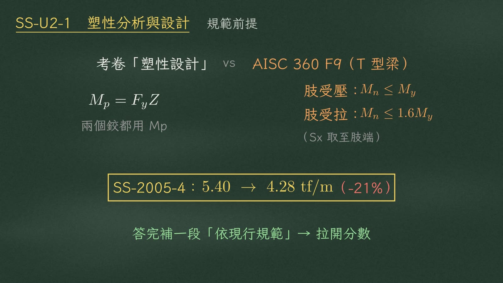
第 13 章陷阱總表
考前掃一眼陷阱。
| # | 錯 | 對 |
|---|---|---|
| 1 | PNA 就是形心 | PNA 是等面積軸，形心是 ENA |
| 2 | 寬翼板那側先降伏 | \(M_y\) 取離 ENA 較遠那側的 \(S_{min}\) |
| 3 | 跨 PNA 的板整塊算 | 切成兩段分別算 |
| 4 | T 型 PNA 一定在肢 | 先比翼板面積和半面積，PNA 可能在翼板裡 |
| 5 | H 型翼板力臂 \(d\) | 力臂是 \(d - t_f\) |
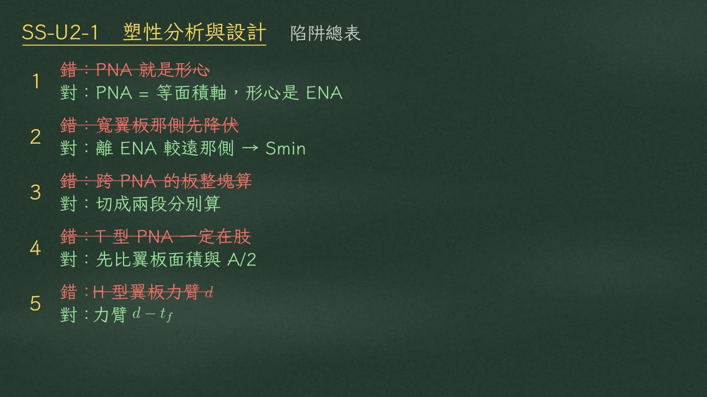
| # | 錯 | 對 |
|---|---|---|
| 6 | 塑性鉸 \(M = 0\) | 塑性鉸傳 \(M_p\)，耗能 \(M_p\theta\) |
| 7 | 第一個鉸就崩塌 | \(n+1\) 個鉸才成完整機構 |
| 8 | 跨間鉸只算一側轉角 | 相對轉角＝左右兩段之和 |
| 9 | 均佈載重鉸放跨中 | 求最小：距固定端 \(0.586L\) |
| 10 | 算一個機構就交卷 | 取最小，並畫彎矩圖驗證 |
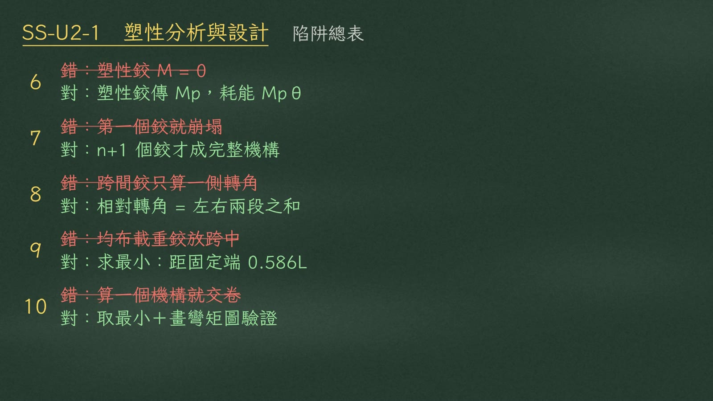
第 14 章總結：解題流程
整理成一張流程。先分題型：
| 題型 | 步驟 |
|---|---|
| 只問斷面 | 找 ENA 和 \(S_{min}\) 算 \(M_y\) → 找 PNA 算 \(Z\) 和 \(M_p\) |
| 問崩塌載重 | 借斷面那一支的 \(M_p\) → 數 \(n+1\) 個鉸 → 虛功求最小 → 畫彎矩圖做下限檢核（超過 \(M_p\) 就換機構） |
| 兩支都要 | 檢查前提：結實斷面和側撐 |
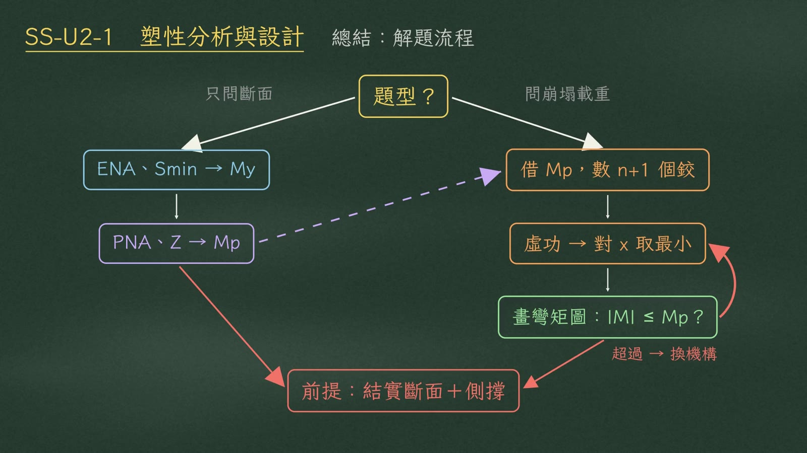
這個單元的公式幾乎從來不印在考卷上，但都能從兩個假設和一條虛功方程式推出來。
SS-2005-4：\(1.79 \times 1.46 = 2.61\)
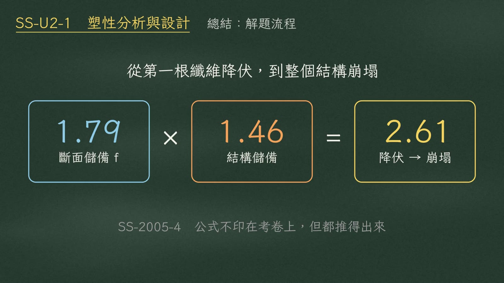